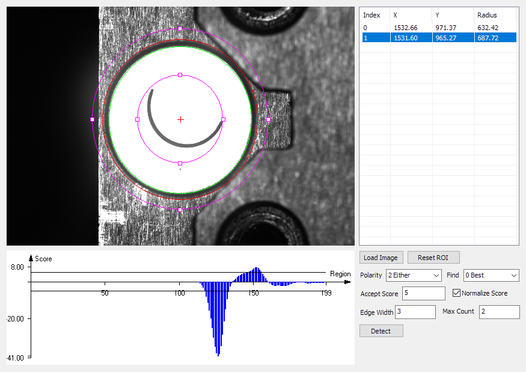
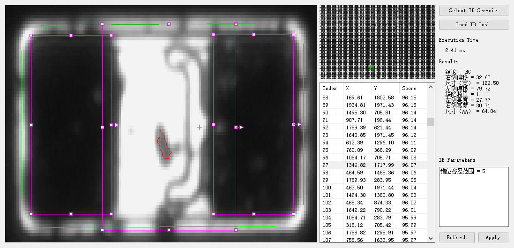

我们提供两种类型的 DEMO：
- 带有 GUI 的 MFC/C#/QT 程序，提供可视化界面用于参数的调整、结果显示等。其可执行程序位于 demo 文件夹下的所需平台对应的文件夹内，如 demo/x64 ，并提供相应的源代码和工程文件。
- 简单的 C++/C# 代码片段，用于演示某些功能函数如何调用。通常为一个 Main 函数体，位于 demo/snippets 文件夹内。使用方法请参考 如何使用 DEMO 代码片段。
注意 1：DEMO 程序的平台需与安装注册的 LPW 版本对应。
注意 2：执行 DEMO 程序前，需保证 LPW 已正常注册和授权。
注意 3：安装后自带的 Qt DEMO 程序基于 Qt 5.9.4 版本编译，运行这些 Qt DEMO 的可执行文件需要从 Qt 官方网站下载并安装对应版本。或者，使用我们提供的只包含依赖项的精简压缩包，下载后（ x86 或 x64 ）解压到对应的 DEMO 可执行文件的同级目录下。
GUI 演示程序
| 演示功能 |
| 基础功能 | 演示典型的视觉检测任务流程，包括图像、Region、模板、标定等基础功能。 |
| Region 操作 | 演示如何进行编辑 Region 及如何计算生成新的 Region。 |
| 集成相机的采图回调 | 演示如何集成相机到 LPW 程序，使用相机回调采集图像到 LImage 对象，以海康相机为例。 |
| 模板匹配 | 演示高精度模板匹配。| |
| 斑点分析 | 演示斑点分析，支持灰度和彩色模式。 |
| 图像处理 | 演示常见的图像处理算子。 |
| 直线定位 | 演示亚像素直线定位。 |
| 圆定位 | 演示亚像素圆定位。 |
| 路径定位 | 演示路径定位。 |
| 轮廓定位 | 演示亚像素轮廓定位。 |
| 卡尺定位 | 演示各种形状的卡尺定位功能。 |
| 标定 | 演示相机标定，包括多点、小孔、FFD等相机模型，支持不同类型的标定板。 |
| 相机阵列和图像拼接 | 演示相机阵列标定和图像拼接。 |
| 几何计算和测量 | 演示几何模块的常用功能，包括交点计算、距离测量、拟合等。 |
| 条码检测 | 演示一维码和二维码检测，以及条码质量评价。 |
| 显示控件 | 演示如何使用显示控件。 |
| 连接到灵闪服务 | 演示如何与灵闪服务集成，并使用具有强大功能的灵闪作业。 |
代码片段
| 源代码 | 演示功能 |
| HDR | HDR.cpp/cs | 演示如何使用 HDR 算法。 |
| 多帧融合 | ImageBlend.cpp/cs | 演示多帧融合算法，通常用于降噪和获取多帧变化。 |
| 最大最小距离 | MinMaxDistance.cpp/cs | 演示如何计算多边形间的顶点或线段距离。 |
| 投影和数值分析 | ProjectionAndAnalysis.cpp/cs | 演示图像投影算法，以及基于投影结果数据的处理和分析，如数值滤波、局部极值查找等。 |
| 排序 | Sort.cpp/cs | 演示排序算法，特别是阵列排序。 |
| 颜色空间转换 | ColorSpace.cpp/cs | 演示彩色图像常用的颜色空间转换功能。 |
| 自定义模板形状 | LearnWithShape.cpp/cs | 演示基于自定义的形状区域训练模板。 |
| 旋转标定 | CalibRotationCenter.cpp/cs | 演示旋转标定和对位功能。 |
| 背景剔除 | BackgroudSubtract.cpp/cs | 演示从静态或缓慢变化的环境中提取前景。 |
| 数据斑点分析 | DataBlob.cpp/cs | 演示基于数据斑点分析进行刻线上的缺陷检测。 |
| 图像和图形的线性变换 | LinearTransform.cpp/cs | 演示基于点对生成变换矩阵，并对图像和图形进行线性变换 |
| 机器学习分类 | MLClassification.cpp/cs | 演示使用机器学习模型进行图像分类任务。 |
| 手写字符识别 | OCRHandWritten.cpp/cs | 演示使用 OCR 工具识别字符，以手写字符为例。 |
| 多边形编辑 | PolygonClipper.cpp/cs | 演示多边形的扩张、收缩、以及相交、合并等布尔运算。 |
| 引脚数量检测 | PinCount.cpp/cs | 演示基于双边缘卡尺工具的引脚定位和数量检测。 |
| 白板平场标定 | FlatFieldWhiteBoard.cpp/cs | 演示基于白色色卡进行平场标定，校正暗角及色偏。 |
| 太阳能电池片平场标定 | FlatFieldSolar.cpp/cs | 演示基于检测实物进行平场标定。 |
以下为带有 GUI 的 DEMO 程序介绍。
基础功能
演示典型的视觉检测任务流程，包括图像、Region、模板、标定等基础功能。
源代码 (C++)： mfcdemo/MFCSanity
源代码 (Qt)： qtdemo/QtSanity
源代码 (C#)： csharpdemo/CSharpSanity
图像文件： sourceImg.png，templateImg.png
相关类： LImage, LRectRegion, LMatch, LMatchResults, LCalibNPoints
- 点击 Load Image 按钮，加载图片。
- 点击 Template Learn 按钮，按照 Region 的位置抠图，学习模板。
- 点击 Template Match 按钮，执行模板匹配，右侧显示像素坐标。
- 点击 Calibrate 按钮，执行9点标定，右侧显示物理坐标。
- 点击 Reset Calibration 按钮，重置标定，右侧显示像素坐标。
- 点击 Save Calibration 按钮，保存标定文件，右侧显示物理坐标。
- 点击 Load Calibration 按钮，加载标定文件。
- 点击 Copy & Save 按钮，执行保存图像，在可执行文件同级的 images 目录保存拷贝的 jpg 图像。
- 拖动图形界面中的 Region 边界，可移动或改变 Region 形状。
- 点击 Reset Roi 按钮，按照当前图像尺寸重置roi位置。
Region 操作
演示如何进行编辑 Region 及如何计算生成新的 Region。
源代码 (C++)： mfcdemo/MFCRegion
源代码 (Qt)： qtdemo/QtRegion
源代码 (C#)： csharpdemo/CSharpRegion
图像文件： mask.bmp
相关类： LRectRegion, LRotRectRegion, LPolyRegion, LMaskRegion, LCircleRegion, LAnnulusRegion

- 点击 Load Image 按钮，加载图像。
- 点击 Load Mask 按钮，加载蒙版图像到 Mask Region。
- 选择 R1 和 R2 用于后续的操作。
- 点击下方的各类操作按钮，运算得到的新的 Region 显示在画布上。
- 该演示程序可对选择的 R1 和 R2 执行 Union， Subtract，Intersect ，或者 Exclusive OR 操作。
- 该演示程序可对选择的 R1 执行 Translation，Rotate，Scale 或者 Invert 操作，使用输入的 dx，dy，da 和 ds 数值。
- 点击 Reduce Image 按钮，计算和显示 R1 的子图像和对应的蒙版。
- 点击 To Mask 按钮，显示 R1 的蒙版在原图中的对应位置。
- 移动鼠标可显示其当前所在的像素位置，以及在 R1 中的相对位置。
- 点击 Back to Edit 按钮回到初始状态。
集成相机的采图回调
演示如何集成相机到 LPW 程序，使用相机回调采集图像到 LImage 对象，以海康相机为例。
源代码 (C#)： csharpdemo/CSharpHikCam
相关类： LImage
- 安装海康相机驱动。
- 打开 MVS 查询相机序列号，填入右侧文本输入框中。
- 点击 Start 按钮，打开相机。
- 点击 Run (Continues Trigger) 按钮，切换为连续触发，不断更新和显示相机采集到的图像。
- 点击 Snap (Soft Trigger) 按钮，切换为软触发，获取一帧图像并显示。
模板匹配
演示高精度模板匹配。
源代码 (C++)： mfcdemo/MFCPat
源代码 (Qt)： qtdemo/QtPat
源代码 (C#)： csharpdemo/CSharpPat
图像文件： sourceImg.png
相关类： LRectRegion, LMatch, LMatchResults
- 点击 Load Image 按钮，加载图像。
- 点击 Learn 按钮，基于当前图像和 Region 位置训练模板。
- 按需修改 Angle 和 Scale 参数。
- 修改 Grayscale Match Weight 用于调节灰度相似性在评分中的占比。
- 点击 Match in ROI 按钮，在当前 Region 位置执行模板匹配。
- 匹配结果显示在下方表格中，包括每个结果的中心点位置、角度、缩放比例和分数。
- 选择其中某一个结果，在画布中高亮显示。
斑点分析
演示斑点分析，支持灰度和彩色模式。
源代码 (C++)： mfcdemo/MFCBlob
源代码 (Qt)： qtdemo/QtBlob
源代码 (C#)： csharpdemo/CSharpBlob
Image files: rou.jpg, smile.png, cat.png
相关类： LBlobAnalysis, LBlobFilter, LBlobResults, LBlob
- 点击 Load Image 按钮，加载图像。
- Mode 根据加载的图像格式，自动切换为 Grayscale 或 Color 。
- 选择合适的 Threshold 类型:
- 0 Custom: 使用自定义的阈值上下限。
- 1 Global Adaptive: 使用基于全图的自适应阈值。需设置 Polarity 以及修正阈值时使用的 Bias 数值。
- 2 Local Adaptive: 使用基于局部区域的的自适应阈值。需设置 Polarity 以及修正阈值时使用的 Bias 数值。
- 修改 Soft Threshold 为非零数值开启软阈值功能。
- 点击 Preview 按钮，预览阈值处理的中间结果图像。
- 或者，可以点击 Select Blob Range - Click on Canvas 按钮，再选择画布中的斑点位置，自动生成斑点对应的阈值范围。
- 修改 Max Count 用于多目标检测。
- 选择合适的 Sort by 用于对所有候选的斑点进行排序，选择其中靠前的若干个斑点作为最终结果。
- 点击 Detect 按钮，执行斑点分析。
- 斑点结果显示在下方的表格中，包括每个斑点的中心位置、面积、周长、圆度及长宽比。
- 选择其中某一个结果，在画布中高亮显示。
- 按需勾选并设置过滤器的上下限。
- 点击 Set Limitation (Based on Current Blob) 按钮，基于当前选中的斑点属性，自动设置过滤器的上下限。
- 点击 Re-filter 按钮，应用过滤器到斑点结果，得到过滤后的结果列表。
图像处理
演示常见的图像处理算子。
源代码 (C++)： mfcdemo/MFCImgProc
源代码 (Qt)： qtdemo/QtImgProc
源代码 (C#)： csharpdemo/CSharpImgProc
相关类： LImageThreshold, LImageArithm, LImageFilter, LEdgeFilter, LImageMorph, LImageStats, LHistogram

- 点击 Load Image 按钮，加载图像。
- 该演示程序构建图像的直方图，绘制在右侧画布中。
- 该演示程序计算图像和直方图的统计信息，显示在悬浮窗口中。
- 点击下方的各类图像处理按钮，执行相应的图像处理算子。
- 显示处理后的结果图像在左侧画布中。
- 点击 Show Original 按钮，显示原始图像。
直线定位
演示亚像素直线定位。
源代码 (C++)： mfcdemo/MFCLine
源代码 (Qt)： qtdemo/QtLine
源代码 (C#)： csharpdemo/CSharpLine
图像文件： nline_many.png
相关类： LRotRectRegion, LLineDetector, LLineResults

- 点击 Load Image 按钮，加载图像。
- 拖拽 Region 句柄，移动、缩放、旋转画布中的旋转矩形 Region。
- 选择合适的 Polarity ，用于检测出正确的边缘类型：
- 0 Dark to Light ：从黑（暗）到白（亮）的边缘。
- 1 Light to Dark ：从白（亮）到黑（暗）的边缘。
- 2 Either ：任意一种极性都可以。
- 选择合适的 Find 策略，用于直线的筛选：
- 0 Best ：选择分数最高的直线。
- 1 First: 选择最前的直线。
- 2 Last: 选择最后的直线。
- 修改 Accept Score 参数用于过滤低分数的错误结果。
- 修改 Max Count 用于多目标定位。
- 点击 Detect 按钮，执行直线定位。
- 右侧的表格显示所有检测结果，包括每条直线的中点坐标和角度。
- 选择其中某一个结果，在画布中高亮显示。
- 下方的图表展示沿着 Region 搜索方向的分数分布，用于方便地设置更佳的过滤分数。
圆定位
演示亚像素圆定位。
源代码 (C++)： mfcdemo/MFCCircle
源代码 (Qt)： qtdemo/QtCircle
源代码 (C#)： csharpdemo/CSharpCircle
图像文件： half_arc_1.png
相关类： LAnnulusRegion, LCircleDetector, LCircleResults

- 点击 Load Image 按钮，加载图像。
- 拖拽 Region 句柄，移动和缩放画布中的环形 Region，使其中心点大致位于检测圆心的附近。
- 选择合适的 Polarity ，用于检测出正确的边缘类型：
- 0 Dark to Light ：从黑（暗）到白（亮）的边缘。
- 1 Light to Dark ：从白（亮）到黑（暗）的边缘。
- 2 Either ：任意一种极性都可以。
- 选择合适的 Find 策略，用于圆的筛选：
- 0 Best: 选择分数最高的圆。
- 1 Smallest: 选择最小的圆。
- 2 Largest: 选择最大的圆。
- 修改 Accept Score 参数用于过滤低分数的错误结果。
- 修改 Max Count 用于多目标定位。
- 点击 Detect 按钮，执行圆定位。
- 右侧的表格显示所有检测结果，包括每个圆的圆心坐标和半径。
- 选择其中某一个结果，在画布中高亮显示。
- 下方的图表展示沿着 Region 搜索方向的分数分布，用于方便地设置更佳的过滤分数。
路径定位
演示路径定位。
源代码 (C++)： mfcdemo/MFCPath
源代码 (Qt)： qtdemo/QtPath
源代码 (C#)： csharpdemo/CSharpPath
图像文件： nline_many.png, leadcut.png
相关类： LRotRectRegion, LPathDetector, LPathResults

- 点击 Load Image 按钮，加载图像。
- 拖拽 Region 句柄，移动、缩放、旋转画布中的旋转矩形 Region。
- 选择合适的 Polarity ，用于检测出正确的路径类型：
- 0 Black on White ：黑（暗）路径在白（亮）背景上
- 1 White on Black ：白（亮）路径在黑（暗）背景上
- 设置合适的分数阈值用于获得期望的路径
- Score ：绝对分数阈值
- Relative Score ：相对分数阈值，基于当前和下一个候选结果或背景像素计算
- 修改 Path Width 参数用于在多目标定位，合并或分开相邻的路径
- 修改 Straightness 参数用于控制检出路径的平直率
- 修改 Max Count 用于多目标定位。
- 点击 Detect 按钮，执行路径定位。
- 右侧的表格显示所有检测结果，包括每条路径的起始点坐标和分数。
- 选择其中某一个结果，在画布中高亮显示。
轮廓定位
演示亚像素轮廓定位。
源代码 (C++)： mfcdemo/MFCContour
源代码 (Qt)： qtdemo/QtContour
源代码 (C#)： csharpdemo/CSharpContour
图像文件： rectwithhole.png
相关类： LRotRectRegion, LContourDetector, LContourResults

- 点击 Load Image 按钮，加载图像。
- 拖拽 Region 句柄，移动、缩放、旋转画布中的旋转矩形 Region。
- 设置合适的 Connect Tolerance 连接阈值 和 Kernel Size 核尺寸
- 设置拒绝和过滤阈值
- Reject Short 和 Reject Weak ：绝对阈值，用于拒绝短或者弱的边
- Filter Short 和 Filter Weak ：相对阈值，相对于候选中的最长和最强边，用于过滤短且弱的边
- 点击 Detect 按钮，执行轮廓定位。
- 右侧的表格显示所有检测结果，包括每条轮廓的平均强度、长度和分数。
- 选择其中某一个结果，在画布中高亮显示。
- 选择合适的 Polarity ，用于检测出正确的边缘类型，点击 Detect With Direction 按钮，执行带方向过滤的轮廓定位：
- 0 Dark to Light ：从黑（暗）到白（亮）的边缘。
- 1 Light to Dark ：从白（亮）到黑（暗）的边缘。
- 2 Either ：任意一种极性都可以。
卡尺定位
演示各种形状的卡尺定位功能。
Source code (C++): mfcdemo/MFCGauge
Source code (C#): csharpdemo/CSharpGauge
Image files: cutkerf.png, leadcut.png
Related classes: LLineGauge LCircleGauge LArcGauge
- 点击 Load Image 按钮，加载图像。
- 点击 Reset Roi 按钮，按照当前图像尺寸重置roi位置。
- 选择所需的卡尺类型，如直线卡尺。
- 选择合适的 Polarity ，用于检测出正确的边缘或极性类型：
- 0 Dark to Light ：从黑（暗）到白（亮）的边缘。
- 1 Light to Dark ：从白（亮）到黑（暗）的边缘。
- 2 Either Edge ：任意一种边缘极性都可以。
- 3 Black on White: 黑色（暗）目标在白色（亮）背景上。
- 4 White on Black: 白色（亮）目标在黑色（暗）背景上。
- 5 Either Object: 接受任意一种目标极性，白物体黑背景，或者黑物体白背景。
- 修改卡点采样区域的尺寸和间距
- 点击 Detect 按钮进行卡尺定位
- 定位结果在右侧以文本形式显示，比如直线卡尺定位结果，将输出直线的中点位置及其角度。
- 下方的图表展示沿着 Region 搜索方向的分数分布，用于方便地设置更佳的过滤分数。
标定
演示相机标定，包括多点、小孔、FFD等相机模型，支持不同类型的标定板。
源代码 (C++)： mfcdemo/MFCCalib
源代码 (Qt)： qtdemo/QtCalib
源代码 (C#)： csharpdemo/CSharpCalib
图像文件： chessboard.png，circlegrid.png，distcharuco.jpg
相关类： LCalibNPoints, LCalibPinHole, LCalibFFD, LCalibCustom, LCalibBoard, LCalibPointPairs
- 选择合适的标定板，点击相应按钮：
- Chessboard ：打开棋盘格图像，设置相应的 Grid Size 和 Square Size 数值。
- Circle Grid ：打开圆形点阵图像，设置相应的 Grid Size 和 Square Size 数值。
- Distributed Charuco ：打开分散式二维码棋盘格图像，设置相应的 Square Size 数值。
- 勾选 Auto Remove Bad 启用自动剔除检测到的坏点的功能。
- 点击 Detect 按钮，检测标定板，生成图像和物理点对集合。
- 选择合适的标定模型：
- NPoints ：多点变换模型，需设置合适的变换矩阵类型。
- PinHole ：小孔模型，可以点击 Add Multi-view Points ，设置当前的点对集合用于多视角标定。
- FFD ：FFD模型，需设置合适的网格尺寸，更大的尺寸可获得更高的优化精度，但速度更慢。
- Custom ：自定义标定模型。
- 点击 Calibrate 按钮，执行相机标定。
- 点击 Save 按钮，保存当前标定到文件。
- 点击 Load 按钮，从文件读取标定。
- 点击 Reset 按钮，重置标定。
- 选择合适的矫正模式，点击 Fix Image 按钮，执行图像矫正，修正图像的镜头畸变和相机倾斜，并显示结果在画布上。
- 在画布上移动鼠标，显示其当时的像素位置以及对应的物理坐标。
相机阵列和图像拼接
演示相机阵列标定和图像拼接。
源代码 (C++)： mfcdemo/MFCCamArray
源代码 (Qt)： qtdemo/QtCamArray
源代码 (C#)： csharpdemo/CSharpCamArray
图像文件夹： camera_array
相关类： LCameraArray, LCalibBoard

- 点击 Load Image 按钮，选择 camera_array 文件夹，其中包含标定和拼接用的两组图像。
- 修改 Square Size 数值并选择合适的标定模型。
- 点击 Calibrate 按钮，执行相机阵列标定。
- 点击 Image Stitching 按钮，读取拼接用图像，并执行图像拼接。
- 上方的两个画布分别显示读取到的原始图像，下方画布展示拼接结果图像。
- 在画布上移动鼠标，显示其在当前图像中的像素位置以及对应的物理坐标。
几何计算和测量
演示几何模块的常用功能，包括交点计算、距离测量、拟合等。
源代码 (C++)： mfcdemo/MFCGeom
源代码 (Qt)： qtdemo/QtGeom
源代码 (C#)： csharpdemo/CSharpGeom
相关类： LPoint, LLine, LCircle, LPoints, LRect, LPolygon


条码检测
演示一维码和二维码检测，以及条码质量评价。
源代码 (C++)： mfcdemo/MFCBarcode
源代码 (Qt)： qtdemo/QtBarcode
源代码 (C#)： csharpdemo/CSharpBarcode
图像文件： barcode_code39.png，barcode_code128.png，barcode_datamatrix.png, barcode_ean13.png，barcode_i25.png，barcode_qr.png
相关类： LBarcodeDetector, LBarcodeResults, LBarcodeResult
- 点击 Load Image 按钮，加载图像。
- 勾选所需的一维码类型或者 All 1D Barcode ，用于指定一维码检测的条码类型。
- 勾选所需的二维码类型或者 All 2D Barcode ，用于指定二维码检测的条码类型。
- 勾选 Quality Verify 用于开启条码质量评价功能。
- 修改 Max Count 用于多目标检测。
- 点击 Detect 按钮，执行条码检测和评价。
- 表格中显示所有检出的条码结果，包括每个条码的中心位置、角度、评级和数据。
- 选择其中某一个结果，在画布中高亮显示。
显示控件
演示如何使用显示控件。
源代码 (C++)： mfcdemo/MFCDisplay
源代码 (Qt)： qtdemo/QtDisplay
源代码 (C#)： csharpdemo/CSharpDisplay
相关类： LDisplay
- 点击 Load Image 按钮，加载图像。
- 选择某一种 Region 类型，点击 Add 按钮，随机增加若干个该类型的 Region 到显示控件。
- 点击 Reset 按钮，移除所有 Region。
- 选择某一种 Shape 类型，点击 Add 按钮，随机增加若干个该类型的图形到显示控件。
- 点击 Reset 按钮，移除所有图形。
- 点击 Open Display Dialog 按钮，打开一个包含显示控件的新窗口。
- 拖拽图像可移动视窗，使用鼠标滚轮缩放视窗。
- 点击 Fit Window 按钮，将自动缩放和移动视窗以适应当前窗口尺寸。
- 点击 Fit a Random Object 按钮，将随机选择某一个 Region 或图形，移动并缩放以全窗口显示该目标。
- 点击 Reset All 按钮，移除所有 Region 和 图形。
- 右键显示控件，呼出菜单。
- 点击 Save 按钮，存储当前图像到文件。
- 点击 Save Window 按钮，存储当前窗口的截图到文件。
连接到灵闪服务
演示如何与灵闪服务集成，并使用具有强大功能的灵闪作业。
源代码 (C++)： mfcdemo/MFCIBService
源代码 (Qt)： qtdemo/QtIBService
源代码 (C#)： csharpdemo/CSharpIBService
图像文件夹： exame_chip_1，exame_chip_2
相关类： LIBService, LIBAlgoResult, LIBData, LIBAlgoConfig, LMatch

- 点击 Select IB Service 按钮，选择灵闪的安装目录。
- 等待该演示程序连接到灵闪服务，成功后弹出窗口提示。
- 点击 Load IB Task 按钮，选择样本任务和图像所在的文件夹。
- 该演示程序将加载并训练模板，在图像中找到所有匹配目标并显示在右侧列表中。
- 在列表中选择其中一个匹配结果。
- 该演示程序将基于该结果所在的位置，生成 Region 然后执行灵闪作业。
- 执行时间和结果显示在画布和右侧面板中。
- 点击 Refresh 按钮，从灵闪服务重新加载作业的参数列表。
- 在输入框中修改参数的数值。
- 拖动图形界面中的 Region 边缘，可移动或改变作业中 Region 的形状和位置。
- 点击 Apply 按钮，应用改动后的参数到灵闪服务，再次执行该作业将看到参数变换的影响。
{kind=link}
{kind=link}
{kind=link}
{kind=link}
{kind=link}
{kind=link}
{kind=link}
{kind=link}
{kind=link}
{kind=link}